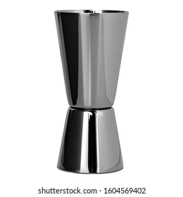

In the fall of 2022, I was gifted a cocktail mixing set for my birthday1 which included a cocktail jigger. A jigger is an essential tool for mixing cocktails as it makes it relatively easy to measure the quantity of drinks that go into a cocktail (e.g., 40 ml of vodka, 10 ml of sugar syrup, etc.).
1 It was put to use immediately and some delicious whiskey sours were made.

Stock photo of a cocktail jigger
After a couple of months of not having to use my cocktail set due to travelling, I couldn’t remember the volume of either side (i.e., basin) of the jigger, nor could I find the remains of the packaging material for reference. Googling showed that jiggers come in different sizes, so I decided to measure the volume myself.
Over the next hour or so, I came up with two methods2:
2 not original, obviously
measure the volume using water and a kitchen digital weighing scale
measure the dimensions of the two basins and use some middle-school math to calculate the volume
Method 1: Weight-based
The digital kitchen scale I own has this nifty feature where it can account for and automatically subtract the weight of the container so that only the weight of the object of interest is shown.
The scale measures weight in grams (g), but I was interested in the volume in milliliters (ml). Quick Googling reminded me of the nifty fact I learned and forgot a long time ago, that the weight of 1 g of water is approximately equal to the volume occupied by 1 ml of water.
Placing the jigger on the scale and ensuring that the scale read zero g, I filled up the larger basin to the top with tap water. The scale showed 51g, which was odd as I was expecting it to show a number that would be a multiple of five (i.e., a number ending with a 0 or a 5)3.
3 although some jigger images online show possible measurements like 22.5 ml (which is 0.75 oz)
4 obvious to a Statistician or a Data Scientist
So obviously4 the next logical step was to take multiple measurements. After making sure to drain the jigger, clean the scale of any spilled water droplets, and ensuring the scale read zero, I took the next measurement which read 48 g. Excellent. I love consistent results.
So I took another 8 measurements, and repeated this process for the smaller basin of the jigger as well. These measurements are visualized below.
Each time I filled it to what I perceived to be the top but I got different measurements. I don’t think that this variability is necessarily due to the variability of the digital scale itself but most likely due to the variability in my perception of what counts as ‘filled to the brim’.
Averaging these measurements gave me a volume of 50.1 ml for the big basin and 30.6 ml for the smaller basin.
Interestingly5, it also indicates6 that I usually put anywhere between 48-52 (or 28-32) ml of a drink when I’m supposed to add 50 (or 30) ml.
5 to me and literally nobody else
6 assuming the digital scale is not causing this variability
Method 2: Dimension-based
The shape of a jigger reminded me of a (partial) cone, so I measured7 the height \(h\) from the mouth of each basin to the point where it joins the other basin, and the diameter \(2R\) of the mouth of each basin.
7 using a pair of digital calipers I totally had lying around the house and did not use this exercise as an excuse to buy
For the smaller basin, the height \(h_s\) was measured as 3.48 cm, and a diameter of 3.9 cm (so a radius \(R_s\) of 1.95 cm).
For the larger basin, the height \(h_l\) was measured as 5.28 cm, and a diameter of 4.18 cm (so a radius \(R_l\) of 2.09 cm).
The radius \(r\) of the base where the two basins are attached to each other is \(2.78 / 2 = 1.39\).
8here’s a derivation (and another) of the volume of a cone using calculus, which I’ve probably derived in school or university and long since forgotten
gave a volume9 of 30.8 ml for the smaller basin and 50.9 for the larger basin which was very similar to the numbers from the other method, but not exactly equal to 30 and 50 ml due to (human) measurement error.
9 using the conversion factor of 1 cm3 to 1 ml for volume of water
A few days after doing all these measurements, I came across a similar (in spirit?) post on a blog I frequent, which inspired me to write this up.
Source Code
---title: "Determining the volume of my (cocktail) jigger"date: "2023-01-09"categories: [Miscellaneous, Measurement, R]code-fold: truetoc: falsereference-location: margin---In the fall of 2022, I was gifted a cocktail mixing set for my birthday[^8] which included a cocktail jigger. A jigger is an essential tool for mixing cocktails as it makes it relatively easy to measure the quantity of drinks that go into a cocktail (e.g., 40 ml of vodka, 10 ml of sugar syrup, etc.).[^8]: It was put to use immediately and some delicious [whiskey sours](https://en.wikipedia.org/wiki/Whiskey_sour) were made.After a couple of months of not having to use my cocktail set due to travelling, I couldn't remember the volume of either side (i.e., basin) of the jigger, nor could I find the remains of the packaging material for reference. Googling showed that jiggers come in different sizes, so I decided to measure the volume myself.Over the next hour or so, I came up with two methods[^1]:[^1]: not original, obviously- measure the volume using water and a kitchen digital weighing scale- measure the dimensions of the two basins and use some middle-school math to calculate the volume## Method 1: Weight-basedThe digital kitchen scale I own has this nifty feature where it can account for and automatically subtract the weight of the container so that only the weight of the object of interest is shown.The scale measures weight in grams (g), but I was interested in the volume in milliliters (ml). Quick Googling reminded me of the nifty fact I learned and forgot a long time ago, that the weight of 1 g of water is approximately equal to the volume occupied by 1 ml of water.Placing the jigger on the scale and ensuring that the scale read zero g, I filled up the larger basin to the top with tap water. The scale showed 51g, which was odd as I was expecting it to show a number that would be a multiple of five (i.e., a number ending with a 0 or a 5)[^2].[^2]: although some jigger images online show possible measurements like 22.5 ml (which is 0.75 oz)So _obviously_[^3] the next logical step was to take multiple measurements. After making sure to drain the jigger, clean the scale of any spilled water droplets, and ensuring the scale read zero, I took the next measurement which read 48 g. _Excellent_. I love consistent results.[^3]: obvious to a _Statistician_ or a _Data Scientist_So I took another 8 measurements, and repeated this process for the smaller basin of the jigger as well. These measurements are visualized below.Each time I filled it to what I perceived to be the top but I got different measurements. I don't think that this variability is necessarily due to the variability of the digital scale itself but most likely due to the variability in my perception of what counts as 'filled to the brim'.```{r}#| warning: false#| message: falselibrary(dplyr)library(ggplot2)vol_big <-c(51, 48, 48, 52, 49, 50, 51, 52, 50, 50)vol_small <-c(31, 28, 32, 30, 30, 29, 32, 32, 31, 31)tibble(Basin =c(rep("Smaller basin", 10), rep("Larger basin", 10)),`Volume (in ml)`=c(vol_small, vol_big)) %>%mutate(Basin = forcats::fct_rev(Basin)) %>%ggplot(aes(x =`Volume (in ml)`, fill = Basin, color = Basin)) +geom_dotplot(binwidth =1, stroke =2, dotsize =0.7) +theme_classic() +theme(legend.position ="none", axis.title.x =element_text(size =16), axis.text.x =element_text(size =16), strip.text =element_text(size =16)) +scale_y_continuous(NULL, breaks =NULL) +scale_fill_manual(values =c("#E69F00", "darkgreen")) +scale_color_manual(values =c("#E69F00", "darkgreen")) +facet_wrap(~ Basin, scales ='free')```Averaging these measurements gave me a volume of `r round(mean(vol_big), 1)` ml for the big basin and `r round(mean(vol_small), 1)` ml for the smaller basin.Interestingly[^4], it also indicates[^5] that I usually put anywhere between `r paste(range(vol_big), collapse = "-")` (or `r paste(range(vol_small), collapse = "-")`) ml of a drink when I'm supposed to add 50 (or 30) ml.[^4]: to me and _literally_ nobody else[^5]: assuming the digital scale is not causing this variability## Method 2: Dimension-basedThe shape of a jigger reminded me of a (partial) cone, so I measured[^6] the height $h$ from the mouth of each basin to the point where it joins the other basin, and the diameter $2R$ of the mouth of each basin.[^6]: using a pair of _[digital calipers](https://en.wikipedia.org/wiki/Calipers#Digital_caliper)_ I _totally_ had lying around the house and did not use this exercise as an excuse to buyFor the smaller basin, the height $h_s$ was measured as 3.48 cm, and a diameter of 3.9 cm (so a radius $R_s$ of 1.95 cm).For the larger basin, the height $h_l$ was measured as 5.28 cm, and a diameter of 4.18 cm (so a radius $R_l$ of 2.09 cm).The radius $r$ of the base where the two basins are attached to each other is $2.78 / 2 = 1.39$.Plugging these into the [formula for a partial cone](https://www.cuemath.com/measurement/volume-of-a-partial-cone/)[^9][^9]: [here's](https://brilliant.org/wiki/volume-cone/) a derivation (and [another](https://math.stackexchange.com/questions/891163/volume-of-a-frustum)) of the volume of a cone using calculus, which I've probably derived in school or university and long since forgotten$$V = \frac{1}{3} \times \pi \times h \times \Big(R^2 + Rr + r^2\Big)$$```{r}cone <-function(h, r, R) { (pi * h * (R^2+ (R * r) + r^2)) /3}```gave a volume[^7] of `r round(cone(3.48, 1.39, 1.95), 1)` ml for the smaller basin and `r round(cone(5.28, 1.39, 2.09), 1)` for the larger basin which was very similar to the numbers from the other method, but not exactly equal to 30 and 50 ml due to (human) measurement error.[^7]: using the conversion factor of 1 cm^3^ to 1 ml for volume of waterA few days after doing all these measurements, I came across a similar (in spirit?) [post](https://statmodeling.stat.columbia.edu/2023/01/06/god-is-in-every-leaf-of-every-tree-bathroom-scale-edition/) on a blog I frequent, which inspired me to write this up.